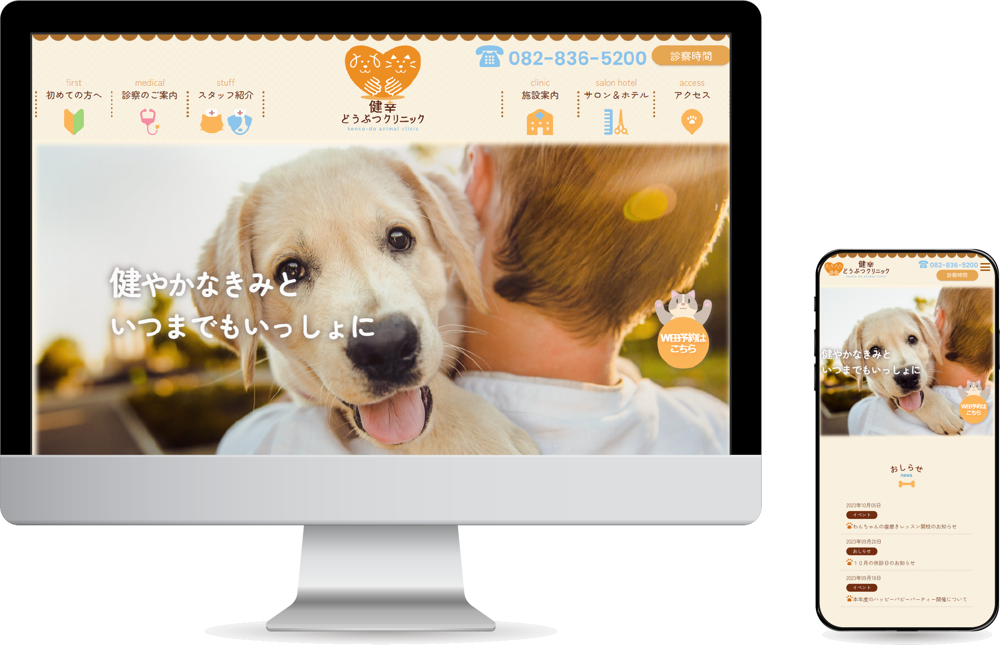

Works 作ってきたもの
健幸どうぶつクリニック(架空) Webサイト
種類:Webサイト

- サイト概要
-
動物病院『健幸どうぶつクリニック』のwebサイト（架空サイト）
【健幸どうぶつクリニック】
「共に歩み、健やかな未来へ」を理念とした新規オープンの犬猫専門の動物クリニック。大切なペットにはたとえ病気になってしまっても健やかに幸せに暮らしてほしいという思いのもと、一匹一人に寄り添った医療を提供している。動物病院のほかにもサロンやドッグラン付きのペットホテルがある。
- ターゲット層
-
セカンドオピニオンや引っ越しにてこれから動物病院を探す犬猫を飼っている家庭
従来より来院していただいているお客様
- 目的・ゴール
- 動物病院の雰囲気を知ってもらい、新規の顧客開拓に繋げる。
日頃より来院している方に病院の最新情報を伝え、WEB予約としての機能を果たす。
- コンセプト
- 2健康や環境に対して関心が高い20-50代の男女
- 制作ポイント
-
親しみやすさや安心感を感じてもらえるよう、デザイン全体に丸みをもたせ、ベースカラーに加えて柔らかい印象の３色を使用し、犬と猫に関するアイコンを随所に取り入れ、明るく優しい雰囲気に仕上げました。
トップページでは家の形をしたリンクや本の形をしたセクションで訪問者が飽きずにWEBサイトを探索できるよう設計しました。
自作したロゴマークは、犬猫を愛で包むモチーフにしています。健幸のイニシャルであるKをハートと影で表しています。
- 制作過程
- スクールのデザイン課題で作成しました。課題の内容が『”健康堂”という名の架空サイトをつくる』、だったので”けんこうどう”ぶつクリニックと引っかけて今回作成に至りました。
- 制作期間
- デザイン１週間、コーディング１週間
- 使用ツール
- illustrator
Photoshop
HTML/CSS
JavaScript